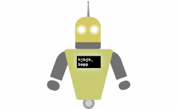

Projects
Characterization of Structural Defects in Single Crystal and Thin Film Materials (Ongoing)
As a student researcher at Xavier University of Louisiana, I am currently working on the characterization of structural defects in single crystal and thin film materials using X-ray diffraction (XRD) and other techniques.
The goal of this project is to understand how these defects affect the properties of the materials and to develop methods to control them.
I am also working on the synthesis of thin film materials.
This project is ongoing, and I am continuously learning new techniques and methods to improve my skills in material characterization and synthesis.
Exploratory Data Analysis of Crash Severity
As a final project for my Pythong programming course at a cohort member of the Morehouse Summer Bridge Experience Program,
I conducted an exploratory data analysis of the relationship between emergency response times, crash severity, and economic burden,
using a dataset compiled by MIT and containing over 10,000 records from 10 different countries.
To view the project notebook, click here.
To view the research poster, click here.
Chadashiel Education Website

As part of my goal to start a free educational platofrm, I created this website that will be published on the web officially, soon.
You can view the website here.
Environmental Sensor System Project

As part of extra projects I asked my professor to assign me, I built an environmental sensor system using Arduino and various sensors to measure temperature, humidity, and particles to and store data for soils for a research he's working on. I used an Arduino Uno, DHT temperature and humidity sensor, and a PM particulate matter sensor to collect data.
Deep Learning Classification Project
As a final project for my Deep Learning course, I trained a pretrained convolutional neural network (CNN) to classify roundworms into "alive" or "dead". I also tested the model's performance on a separate test set and evaluated its accuracy. I used MATLAB and its Deep Learning Toolbox to implement the project.
Robot Project

To practice my web development skills, I decided to do a unsual project of creating a robot using HTML, CSS, and JavaScript.
To view the code, click here.
To view the website, click here.